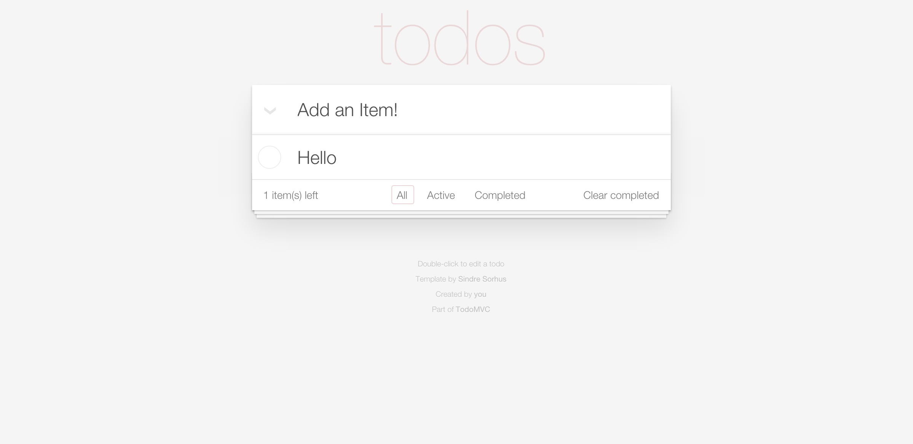
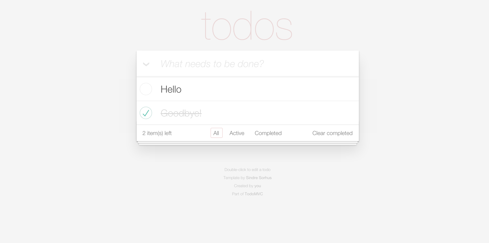
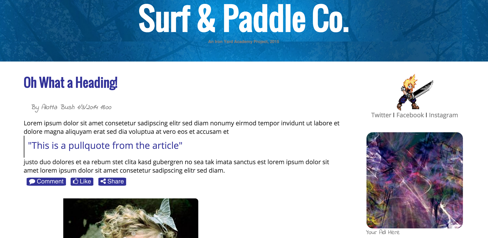
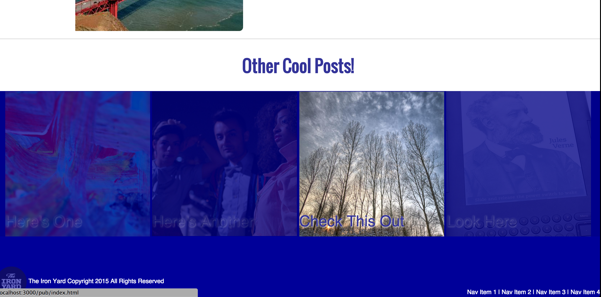
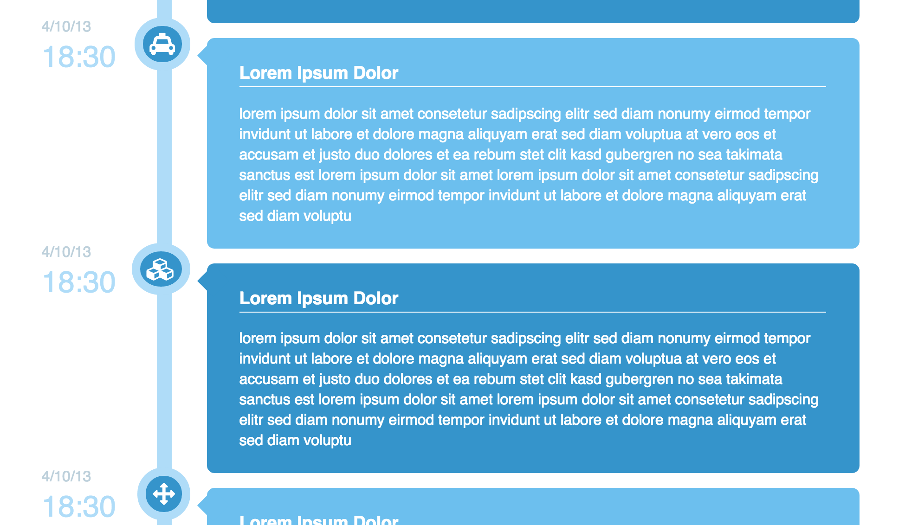
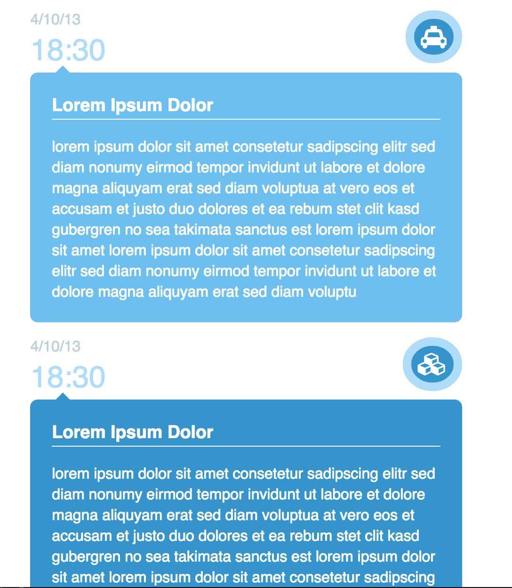

Relentless, inspired and driven programmer ready to conquer and achieve all tasks put before me. I am a recent graduate of The Iron Yard in Orlando, FL with central focus on Front End Development. While at the Iron Yard I absolutely fell in love in Javascript and began to learn and adapt to the language and its different libraries quickly. I specialize in all aspects of Front-End work and create mobile-responsive web applications to support all browsing platforms from laptops to mobile devices. While I am familiar with many of JavaScript's libraries, I specialize in AngularJS and have worked closely with it on multiple projects.
What Went On at The Iron Yard?
ReadyReadCo-Founder/Creator of ReadyRead, a web application in which users can browse and read articles filtered by read time and my final project at The Iron Yard. ReadyRead has a lot of fun user content such as being able to keep track of your time and words read. You can set personal goals, create new goals, track your words, save articles and more. ReadyRead is still has many features to come and is always being tweaked and expanded. Start your ReadyRead account today! Take Me There!
Color ClockThe color clock was a fun overnight project we had at The Iron Yard. The conecept was to build a clock that corresponded to a hex color for every second/minute/hour and as each one the these changed, so would the color. The color was displayed as the background and had a button to toggle between time and the hex color. Check Out The Code!
Weather AppThis beauty was hacked together in a couple of nights by a fellow student and I at The Iron Yard. It was our first time implementing API's into a web application, and as one might expect, it didn't come easy. It was very useful learning to make API calls so early in the program because I ended up using API's almost everyday with different types of GET/POST javascript libraries. The result, a fun interactive weather application with a unique scrolling interface. Check Out The Code!


Todo MVCOne of my personal favorites, todo MVC is an amazing tool to test different javascript frameworks. It's a template with pre-loaded styling and classes in which you can use different frameworks to make the app complete by giving it functionality. I enjoyed it so much because at first glance it would seem easy to be able to remove/add/delete/filter items on a list, but it gets complicated and really tests your knowledge of javascript. I did, and still do, use todo MVC to practice all types of frameworks and most recently had fun implementing a back-end using AngularFire. Check Out The Code!(VueJs)Check Out The Code!(Angular/Firebase)
The Non-VisualsFrom testing API's to TDD(test driven development) to just plain javascript, I spend a lot of time on just my text editor and the command line. Being able to test my code and check for errors before diving in to building an application is a big part in how I attack a project. Using Mocha and other TDD tools, I'm able to detect errors in my code and debugging has gone from a headache to just another day at the office. Many assignments at the yard involved using what we learned to build simple calculators, 'string' calculators, earned how to traverse an API, and also tested different libraries like LoDash. Check Out Some Scripts!
A Few Layouts
Using some blueprint Codrops and using some of my personal style, I built and rebuilt many responsive webpages. Most of these layouts were built for visual purposes and having to build so many was a great way to practice HTML,CSS and the very popular framework Bootstrap. All of these pages were built with mobile in mind, which has become a standard in my work because mobile borwsing is more popular than ever.


Surf and PaddleA simple blog style layout with a sidebar profile and a fun picutre navigation bar with hover affects at the bottom of the page. Check Out Some Code!


Vertical TimelimeA timeline style webpage that looks great on desktop(left) and mobile(right)Check Out Some Code!
If you would like to see more of my work or if you have any inquiries, please Contact Me or View My Resume.